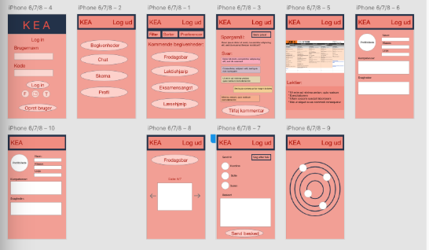
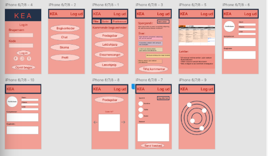

Kerneområderne:
Virksomheden
Dette kerneområdet skal medvirke til at kvalificere den studerende til at kunne forstå virksomhedens forretningsmæssige grundlag, forstå digitale forretningsmodeller, kunne anvende digitale brugerdata og have en innovativ tilgang til multimedieproduktion. Den studerende skal forstå multimediedesignerens rolle i værdikæden i en multimedieproduktion samt være i stand til at kunne planlægge, styre og gennemføre en multimedieproduktion.
Kommunikation og formidling
Dette kerneområdet skal medvirke til, at den studerende kan forstå digitale medier og skabe innovative digitale brugeroplevelser. Den studerende kan producere digitalt indhold og brugercentreret kommunikation.
Design og visualisering
Dette kerneområdet skal medvirke til, at den studerende kan designe og udvikle avancerede digitale brugergrænseflader med udgangspunkt i principper for brugercentreret design og ved inddragelse af internationale udviklingstendenser indenfor digitalt design.
Interaktionsudvikling
Dette kerneområdet skal medvirke til, at den studerende kan modellere, strukturere og udvikle komplekse digitale brugergrænseflader samt håndtere større datasæt til brug for præsentation i digitale brugergrænseflader.